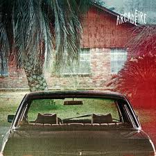
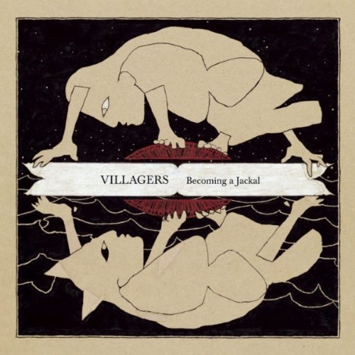
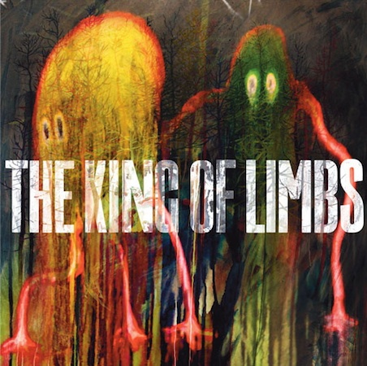

  
Inni by Sigur Ros
A Different Kind of Fix by Bombay Bicycle Club
The Suburbs by Arcade Fire
Becoming a Jackal by Villagers
King of Limbs by Radiohead
CSS3 album slider - based on a
design
by
Luke Jones.
Also check out the
light version.